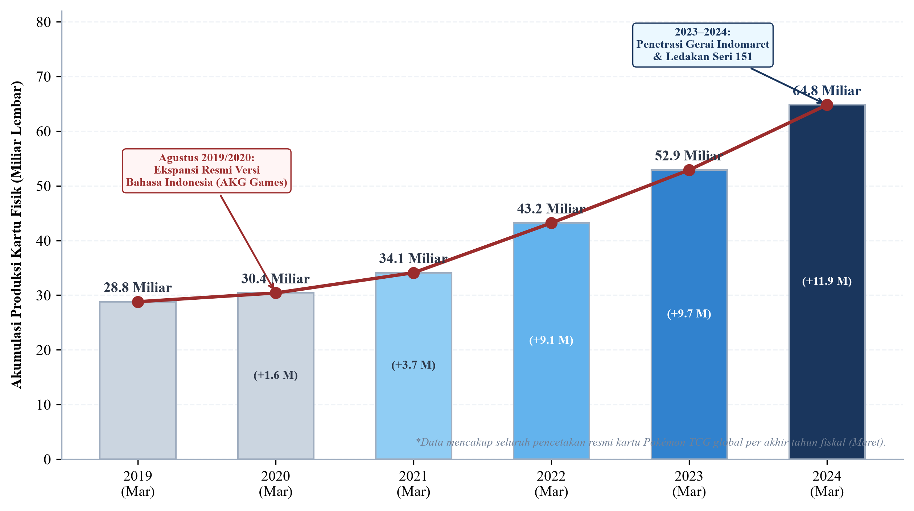
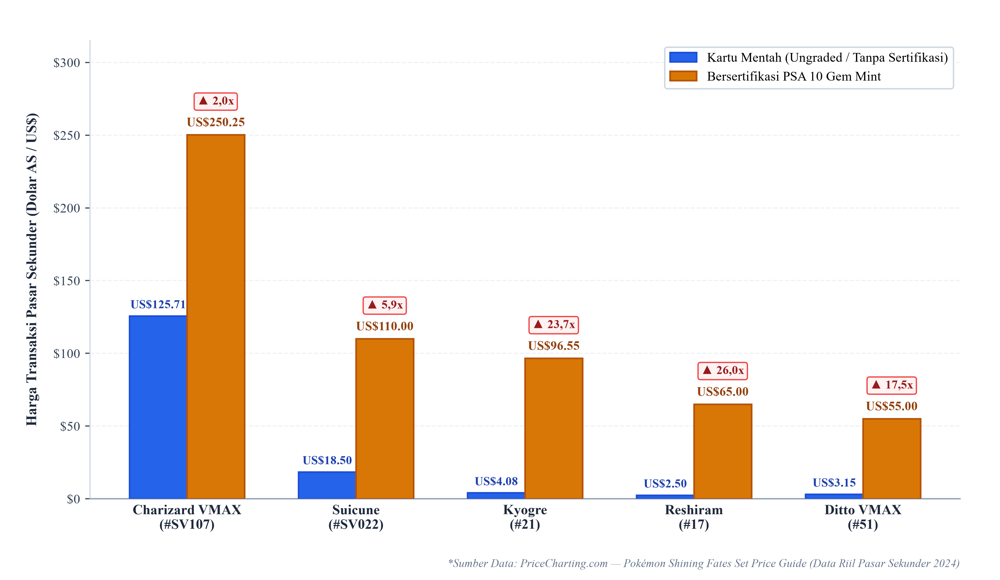
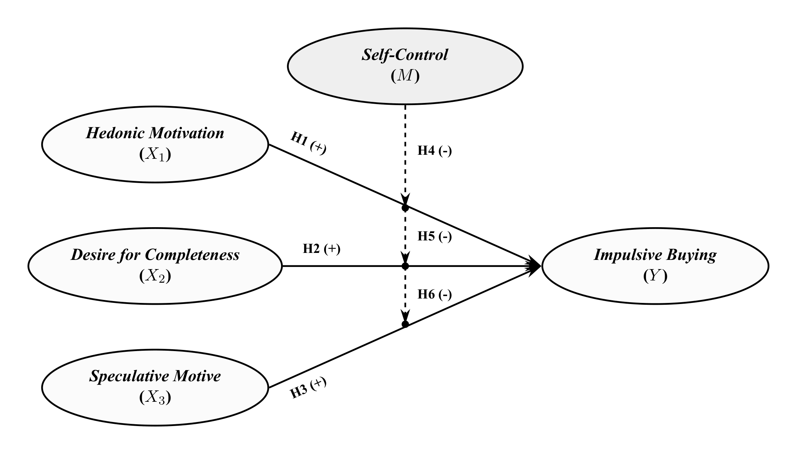

UNIVERSITAS KRISTEN KRIDA WACANA
Fakultas Ekonomi dan Bisnis • S1 Manajemen Keuangan
PENGARUH HEDONIC MOTIVATION, DESIRE FOR COMPLETENESS, DAN SPECULATIVE MOTIVE TERHADAP IMPULSIVE BUYING BOOSTER PACK KARTU POKÉMON TCG DENGAN SELF-CONTROL SEBAGAI VARIABEL MODERASI
Studi Perilaku Konsumen Ekonometrika Keuangan Perilaku (Behavioral Finance) pada Komoditas Kolektibel Fisik di Indonesia
Fenomena Pokémon TCG & Perkembangan Pasar Koleksi
Transformasi kartu hobi menjadi aset alternatif bernilai finansial dengan skala produksi global masif

Distribusi Ritel Modern di Indonesia
Kartu resmi berbahasa Indonesia dipasarkan sejak 2019 dan masuk ke jaringan minimarket (Indomaret, Alfamart) tanpa hambatan impor.
Karakteristik Kemasan Acak (Blind Pack)
Booster pack seharga Rp20.000–Rp30.000 dijual dalam segel tertutup acak; pembeli tidak mengetahui isi kartu sebelum menyobek kemasan.
Peluang Kartu Langka & Spekulasi
Peluang memperoleh kartu langka (Secret Rare) memicu efek near-miss dan ekspektasi nilai pasar sekunder yang mendorong pembelian berulang.
Masalah Penelitian & Kesenjangan Riset Terdahulu
Kombinasi rangsangan produk kasir dan inkonsistensi temuan literatur empiris terdahulu

Gambar 1.3: Disparitas Harga Pasar Sekunder (Ungraded vs. PSA 10)
Data PriceCharting membuktikan grading profesional melipatgandakan harga kartu hingga 26× lipat, memicu ekspektasi spekulasi.
Pranggabayu & Andjarwati (2022) mencatat pengaruh positif kuat, namun Apidana (2022) membuktikan kontrol diri gagal memoderasi dorongan belanja hedonis.
Teori pseudo-set framing (Barasz et al., 2017) terbukti di laboratorium, namun belum pernah diuji empiris pada kartu fisik bernomor seri di Indonesia.
Aryadi & Lingga (2024) baru meneliti motif investasi pada transaksi terencana; belum ada studi yang menguji apakah ekspektasi spekulasi (arbitrase PSA 10) memicu belanja impulsif di kasir serta ketiadaan uji moderasi kontrol diri.
Landasan Teori dan Operasionalisasi Variabel
Hierarki Grand Theory, Supporting Theories, dan 5 skala pengukuran baku internasional
🏛️ Grand Theory: Keuangan Perilaku (Behavioral Finance)
Tokoh Kunci: Simon (1955) • Kahneman & Tversky (1979) • Shiller (2000) • Thaler & Shefrin (1981).
Premis Inti: Membuktikan keputusan finansial individu tidak rasional murni (Homo Economicus), melainkan dipengaruhi bias keterbatasan kognitif (bounded rationality), ilusi kendali (gambler's fallacy), dan dorongan afektif sesaat di etalase kasir.
3 Supporting Theories
1. S-O-R (1974): Stimulus kemasan etalase kasir (S) membangkitkan gairah afektif pembeli (O) ➔ menghasilkan respons belanja impulsif tanpa rencana (R).
2. Pseudo-Set (2017): Pembingkaian seri bernomor urut memicu efek Zeigarnik—ketegangan slot kosong album yang memaksa penuntasan koleksi secara reaktif.
3. Self-Regulation (2002): Kapasitas volisional (planner-doer) sebagai rem mental untuk menahan godaan belanja sesaat dan menunda gratifikasi demi anggaran.
• Desakan emosional seketika di kasir
• Pengabaian dampak alokasi anggaran
• Kecepatan eksekusi keputusan beli
• Pelepasan stres & gratifikasi emosional
• Kenikmatan sensorik merobek pack
• Kesenangan intrinsik tanpa beban
• Ketidaknyamanan mental slot kosong
• Desakan melengkapi saat mendekati finis
• Ambisi kepemilikan master set utuh
• Potensi arbitrase sertifikasi PSA 10
• Persepsi likuiditas pasar sekunder kartu
• Motif akumulasi aset bernilai investasi
• Resistensi godaan display etalase kasir
• Kemampuan menunda kepuasan instan
• Kepatuhan rencana finansial pribadi
Penelitian Sebelumnya, Model Penelitian & Hipotesis
Dasar empiris pengujian struktural Moderated Regression Analysis (MRA)
| Hubungan Model | Fokus Riset Terdahulu | Rujukan Empiris Kunci | Dasar Hipotesis |
|---|---|---|---|
| X₁ ➔ Y | Motivasi hedonis memicu belanja impulsif tanpa rencana | Pranggabayu & Andjarwati (2022); Gong et al. (2024) | Dasar H₁ (+) |
| X₂ ➔ Y | Hasrat kelengkapan set memicu ketegangan belanja | Barasz et al. (2017); Dewi et al. (2026) | Dasar H₂ (+) |
| X₃ ➔ Y | Motif investasi & spekulasi arbitrase mendorong transaksi | Aryadi & Lingga (2024); Colline (2024) | Dasar H₃ (+) |
| M ➔ (X₁₋₃ ➔ Y) | Kontrol diri volisional meredam impulsivitas belanja | Artadita & Firmialy (2024); Lienardy & Panasea (2026) | Dasar H₄, H₅, H₆ (-) |

Rancangan Metode Penelitian & Analisis Data
Protokol purposive sampling, kaidah sampel Green (1991), dan ekonometrika MRA mean-centering
Xi* = Xi − X̄i & M* = M − M̄ untuk melumpuhkan multikolinearitas esensial.
Kesimpulan Rancangan & Kontribusi Penelitian
Nilai kemanfaatan riset bagi perkembangan ilmu ekonomi dan pembukaan sesi tanya jawab
Pengayaan Literatur Behavioral Finance
Memperluas penerapan teori keuangan perilaku pada komoditas hobi fisik bernilai pasar sekunder nyata di Indonesia, serta memvalidasi peran Self-Control sebagai rem volisional kognitif peredam bias kelengkapan koleksi dan spekulasi arbitrase.
Edukasi Literasi & Proteksi Finansial Kolektor
Menjadi pedoman kesadaran finansial bagi komunitas kolektor generasi muda agar terhindar dari jebakan pengeluaran impulsif tanpa anggaran akibat euforia perburuan kartu langka (SAR / PSA 10) di etalase kasir ritel modern.
"Demikian Pemaparan Usulan Proposal Skripsi"
Terima Kasih atas Bimbingan Ibu Dr. Fredella Colline dan Perhatian Bapak/Ibu Dewan Penguji